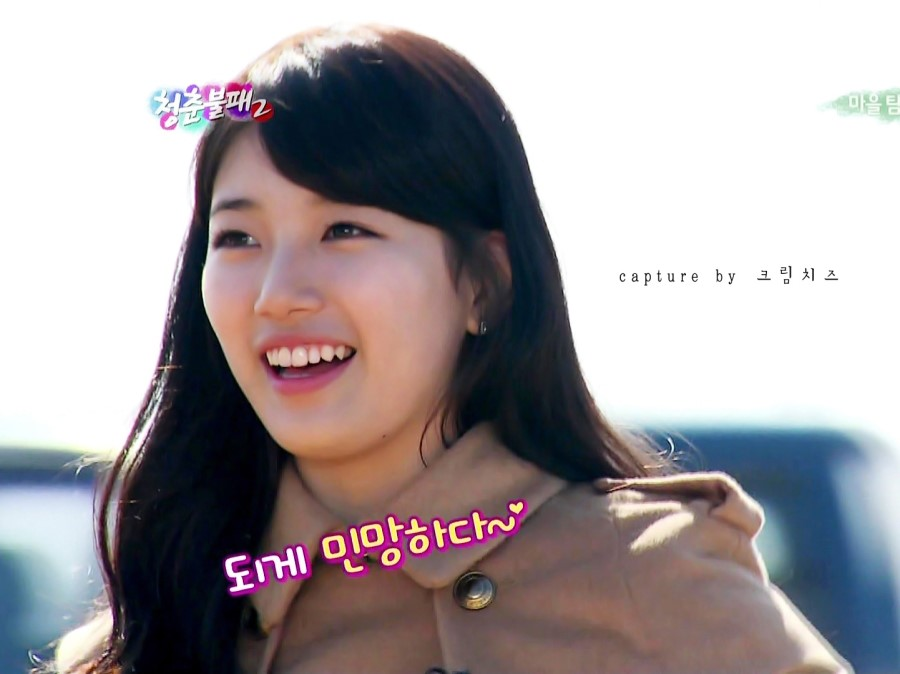

图片是一种特殊的内联元素，也叫替换元素
替换元素：替换元素是浏览器根据其标签的元素与属性来判断显示具体的内容。
比如： type="text" 的是，这是一个文本输入框，换一个其他的时候，浏览器显示就不一样。(X)HTML中的、、、、都是替换元素，这些元素都没有实际的内容。
替换元素可增加行框高度，但不影响line-height,内容区高度值 = padding-top + padding-bottom + margin-top + margin-bottom + height。
要想替换元素居中，可以设置line-height = height， vertral-align = middle。
（vertical-align:middle,是将元素行内框的垂直中点与父元素基线上0.5ex处的一点对齐。）
非替换元素：(X)HTML 的大多数元素是不可替换元素，他们将内容直接告诉浏览器，将其显示出来。
比如p的内容、label的内容；浏览器将把这段内容直接显示出来。
非替换元素添加padding-top或padding-bottom，不影响行框高度，但内容区高度会变化，margin-top，margin-bottom对行框没有任何影响。添加左右边距会影响非替换元素水平位置。要使非替换元素在父元素框内居中，可以设定line-height = 父元素框的高度。
return to the top